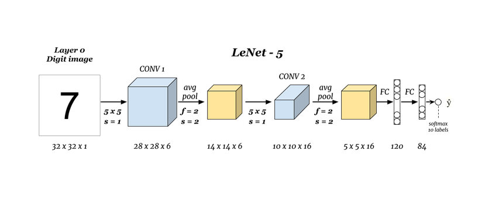
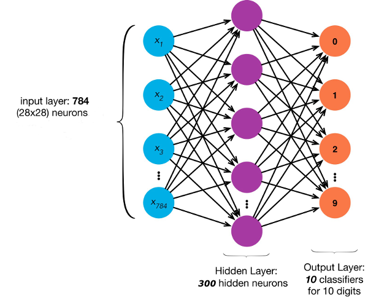

This is a classic LeNet-5 Network which uses a mixture of Convolutional layers, Pooling and Fully Connected layers and finally a softmax function.

The neural network has 3 layers: 1 input, 1 output and 1 hidden layer.
The hidden layer contains 300 units, the input layer has units for each pixel and we have ten output units, one for each digit.

The training was performed by me using Python with high level Keras libraries and the Mnist data set. Check out the training code.
The training was performed by me using Octave programming language and the backpropagation algorithm.
The cost function is the generalization of logistic regression. The cost function includes regularization in order to keep the weights small and thus generalize the model more.
With backpropagation we are able to calculate the partial derivative of the cost function on every weight. When the optimalization algorithm is fed with both the cost function and its derivatives, it can minimize the cost function using gradient descent.
Both the backpropagation and the cost function is my implementation in Octave. The optimalization algorithm (fmincg) is based upon Andrew Ng's Coursera class: Machine Learning.
The prediction algorithm is a Java service with Spring Boot. The model weight is saved in a Keras h5 file which is loaded upon startup. I use high level DeepLearning4J libraries for prediction.
After having the weights for each unit, the prediction is an implementation of forward propagation which is basically only matrix multiplication and the sigmoid function applied. Here (unlike at Convolutional Networks) I only used Apache Commons Math with good old-school low level matrix multiplication.
The neural network was trained using the MNIST database using 60000 examples. The training set is visualised here
Source code available at https://github.com/kavai77/handwriting
Csaba Kavai Linked profile
{kind=link}